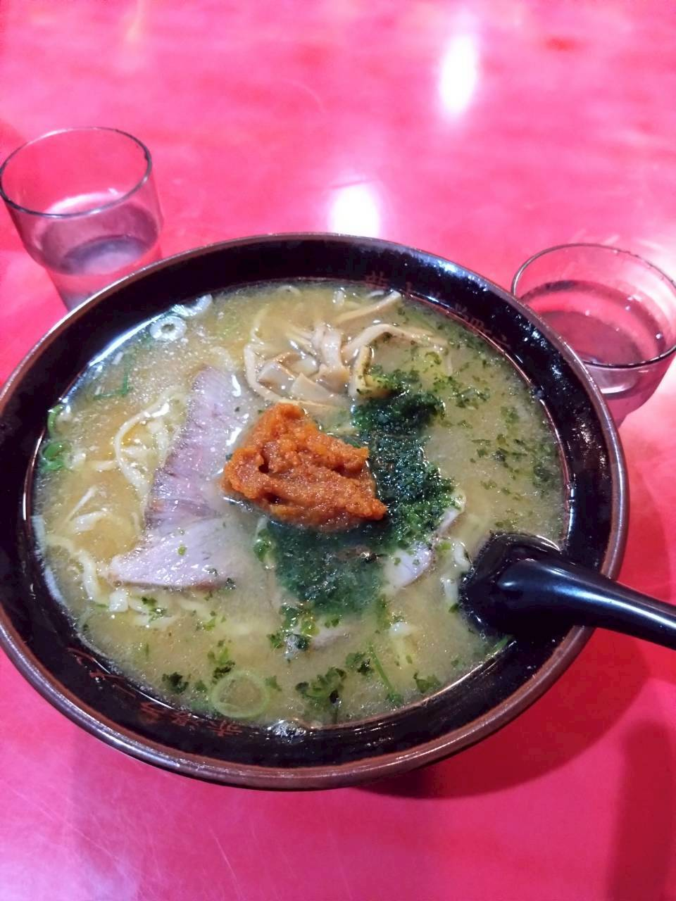
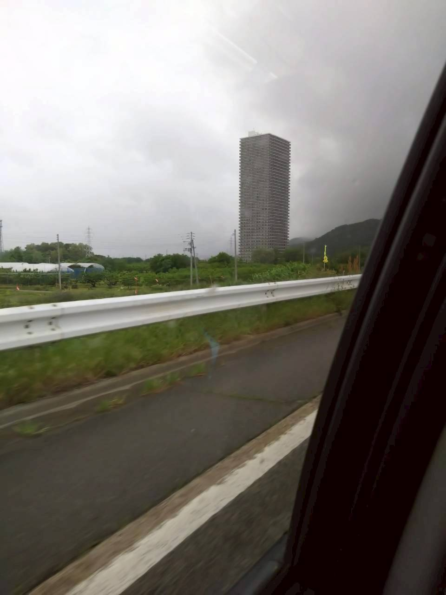
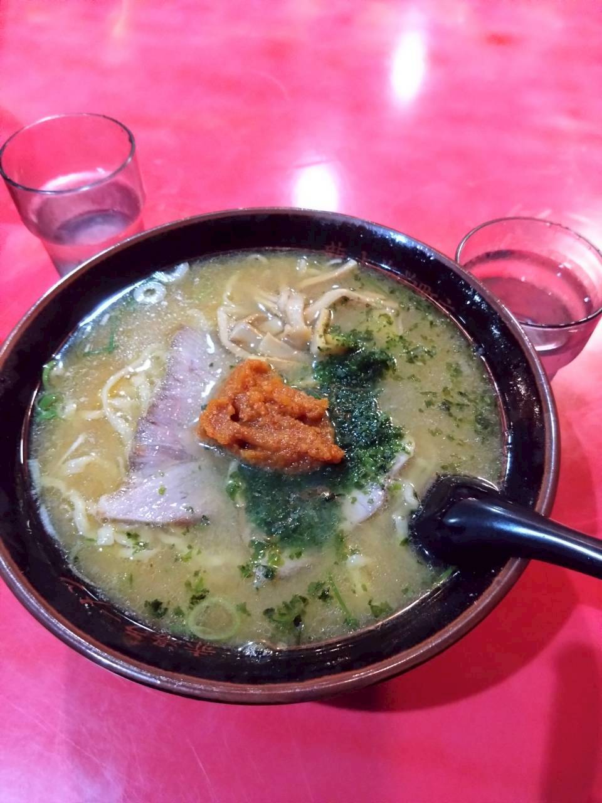
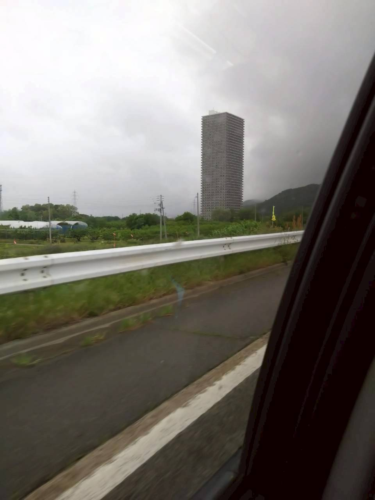

北海道
日本の最北端に位置する都道府県、広大な大地と新鮮な魚介、自然と食を 楽しめる最高の旅先
青森県
未開拓あああああああああああああああああああああああああああああああああああああああああああああああああああああああああああああああああああああああああああああああああああああああああああああああああああああああああああああああああああああああああああああああああああああああああああああああああああああああああああああああああああああおもりああああああああああああああああああああああああああああああああああああああああああああああああああああ
岩手県
未開拓いいいいいいいいいいいいいいいいいいいいいいいいいいいいいいいいいいいいいいいいいいいいいいいいいいいいいいいいいいいいいいいいいいいいいいいいいいいいいいいいいいいいいいいいいいいいいいいいいいいいいいいいいいいいいいいいいいいいいいいいいいいいいいわていいいいいいいいいいいいいいいいいいいいいいいいいいいいいいいいいいいいいいいいいいいいいいいいいいいいいいいいいいいいいいいいいいいいいいいいいいいいいいいいいいいいいいいいいい
宮城県
未開拓ううううううううううううううううううううううううううううううううううううううううううううううううううううううううううううううううううううううううううううううううううううううううううううううううううううううううううううううううううううううううううううううううううううううううううううううう
秋田県
未開拓えええええええええええええええええええええええええええええええええええええええええええええええええええええええええええええええええええええええええええええええええええええええええええええええええええええええええええええええええええええええええええええええええええええええええええええええええええええええええええええええええええええええええええええええええええええええええええええええええええええええええええええええええええええええええええええええええええええええええええええええええええ
山形県
掲載写真が一番多いのはなぜなのか…
福島県
未開拓おおおおおおおおおおおおおおおおおおおおおおおおおおおおおおおおおおおおおおおおおおおおおおおおおおおおおおおおおおおおおおおおおおおおおおおおおおおおおおおおおおおおおおおおおおおおおおおおおおおおおおおおおおおおおおおおおおおおおおおおおおおおおおおおおおおおおおおおおおおおおおおおおおおおおおおおおおおおおおおおおおおおおおおおおおおおおおおおおおおおおおおおおおおおおおおおおおおおおお